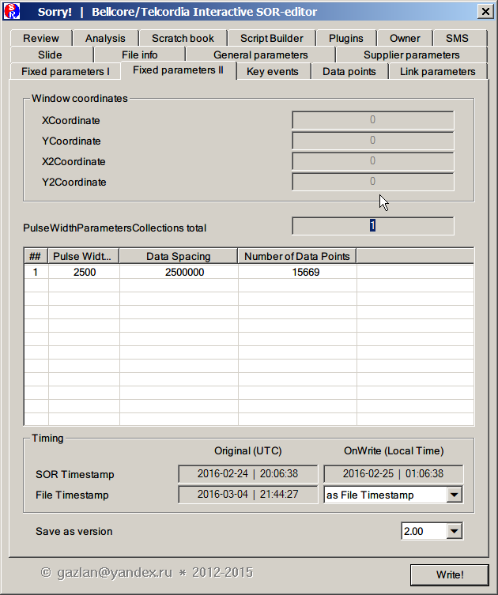
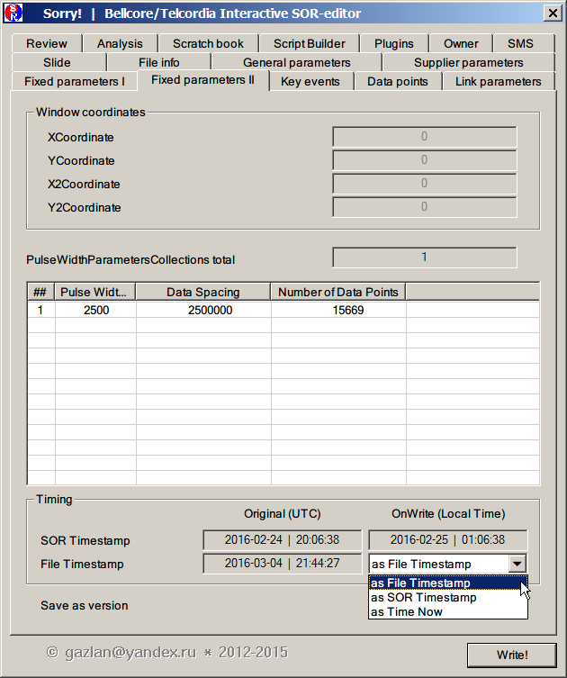
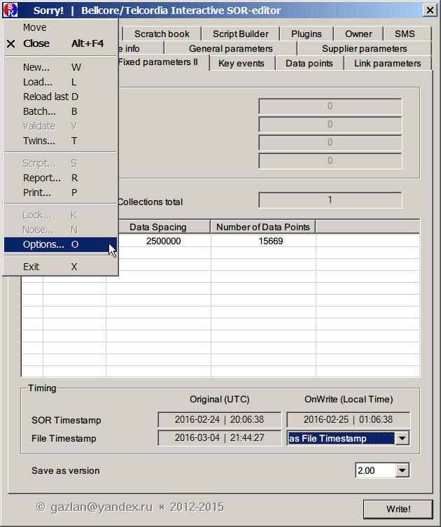
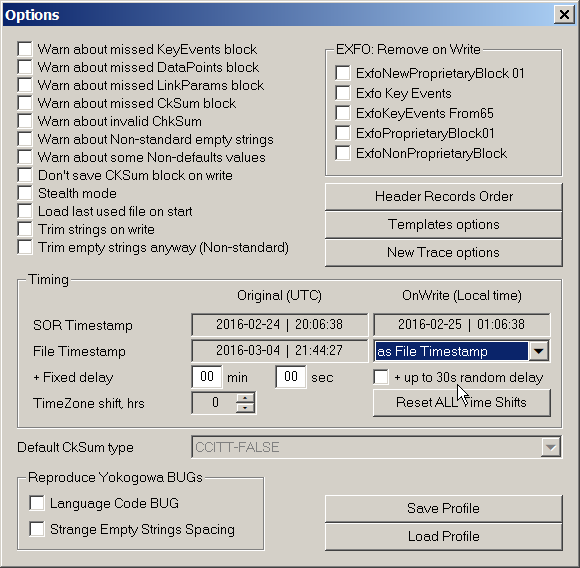

|
SOR-file имеет две отметки времени (TimeStamp): внешнюю, проставляемую, как и у всех других файлов, операционной системой (OS) и внутреннюю, проставляемую в момент создания рефлектометром. Внешняя отметка может редактироваться файловыми менеджерами (или иными утилитами), внутренняя доступна только для редактора Sorry!
File timestamp (отметка OS - дата-время создания файла) может отслеживать по выбору timestamp оригинального файла или отметку времени загловка SOR-файла (вкладка Fixed I). Эта отметка будет установлена в момент сохранения отредактированного файла (после нажатия Write).


Управление опциями тайминга возможно как на вкладке Fixed I, так и из диалога Options. Переход в диалог Options - из системного меню.

При необходимости, может быть задана задержка (сдвиг по времени) относительно выбранного базового времени, например, запаздывание относительно заголовка SOR-файла. Эта величина различна для различных производителей (обычно, в пределах 0..7 минут). Кроме того, может быть включена опция случайного запаздывания в пределах 30 сек. При обработке серии файлов их временные отметки будут сдвинуты на эту случайную величину.

Опция Time Zone shift позволяет компенсировать сдвиг локального времени относительно UTC (поправка должна быть взята с обратным знаком). Например, если локальное время +02:00, то поправка должна быть -2.
Правка Time Zone обычно не требуется, если запись файлов рефлектометром и их редактирование на компьютере производятся в том же самом часовом поясе.
|